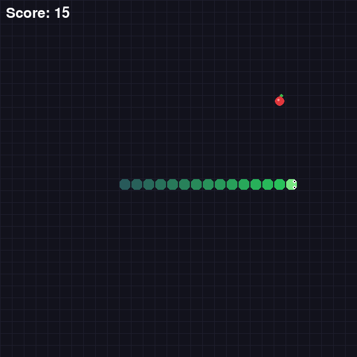
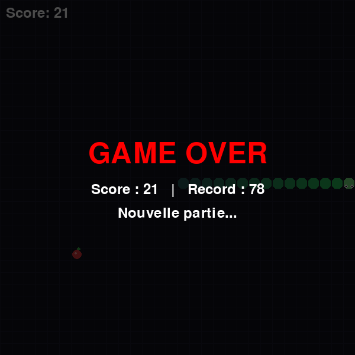

Un Snake en Python
qu'une IA apprend à jouer
Un jeu Snake jouable au clavier, puis un agent de Deep Q-Learning entraîné à y jouer tout seul. Le même moteur objet sert à l'humain et à l'IA.
Présentation du projet
Description, problème abordé et public cible.
Description
Le projet est une implémentation complète du jeu Snake en Python avec la bibliothèque pygame. Le joueur dirige un serpent qui doit manger des pommes pour grandir, sans toucher les murs ni son propre corps. Au-delà du jeu jouable, le projet contient un agent d'intelligence artificielle qui apprend à jouer seul par apprentissage par renforcement (Deep Q-Learning).
Problème / objectif
L'objectif pédagogique est de mettre en pratique les concepts de la Programmation Orientée Objet (héritage, polymorphisme, encapsulation) sur un projet concret et fini, puis d'aller plus loin avec une couche d'IA : montrer qu'une architecture objet bien pensée se réutilise facilement (le même moteur de jeu sert à l'humain et à l'IA).
Public cible
Joueurs
Un Snake classique, jouable immédiatement via l'exécutable.
Jury POO
Une démonstration claire d'héritage, polymorphisme et encapsulation.
Curieux d'IA
Un exemple concret et lisible de Deep Q-Learning de bout en bout.
Le jeu
Téléchargement de l'exécutable, contrôles et aperçu.
Aperçu


Contrôles
| Touche | Action |
|---|---|
↑ ↓ ← → | Déplacer le serpent |
R | Relancer la partie après un Game Over |
Le serpent ne peut pas faire demi-tour instantanément, et accélère par paliers de score (10 puis 20 points).
Fonctionnalités & bonus
La fonctionnalité centrale et les améliorations ajoutées.
Fonctionnalité centrale
- Jeu Snake complet : déplacement, croissance, score, détection de collisions (murs + corps).
- Boucle de jeu fluide avec affichage du score en temps réel.
- Game Over + relance instantanée (touche
R) sans fermer la fenêtre.
Bonus & améliorations
Agent IA (DQN)
Un réseau de neurones apprend à jouer seul et bat largement un humain. Voir la section 5.
Accélération par paliers
Le serpent va plus vite à 10 puis 20 points, augmentant la difficulté.
Pas de demi-tour
Contrôle sur la direction : impossible de repartir à l'opposé instantanément.
Exécutable autonome
Build PyInstaller : un .exe jouable sans Python installé.
Visuel soigné
Grille de fond, serpent en dégradé à coins arrondis avec yeux, pomme dessinée.
Gestion d'états
États running / game over / restart via réinitialisation propre.
Architecture & POO
Structure modulaire et application concrète des concepts objet.
Hiérarchie des classes
Entity # interface : update(game) + draw(screen)
└─ MovingEntity # direction, CELL_SIZE, vitesse + setters validés
├─ Snake # corps, croissance, collisions, tête
└─ Food # position aléatoire, réapparition
Game # orchestre tout pour le joueur humain (clavier)
GameAI # même moteur, mais step-by-step pour entraîner l'IAHéritage
Snake et Food héritent de MovingEntity, elle-même fille de Entity.
Polymorphisme
La boucle for e in entities: e.draw() traite Snake et Food de façon uniforme via l'interface Entity.
Encapsulation
Attributs privés (_body, _dx) et setters qui valident (taille de cellule > 0, pas de direction nulle).
Choix techniques justifiés
| Choix | Pourquoi |
|---|---|
| pygame | Bibliothèque 2D standard et légère pour le rendu et la gestion clavier. |
| PyTorch | Construction simple du réseau et de la rétropropagation pour le DQN. |
Séparation Game / GameAI | Le moteur humain garde sa boucle temps réel ; l'IA a besoin d'un mode step-by-step sans affichage pour entraîner vite. |
| Attributs de classe | CELL_SIZE et DEFAULT_SPEED sont partagés par toutes les instances : une seule source de vérité. |
L'IA, Deep Q-Learning
Un agent apprend à jouer par essais et erreurs, sans aucune règle codée.
Comment ça marche
L'agent observe un état, choisit une action, reçoit une récompense, et ajuste son réseau pour maximiser les récompenses futures (équation de Bellman, mémoire de rejeu, politique ε-greedy).
État (11 valeurs)
3 dangers (devant / droite / gauche), 4 direction actuelle, 4 position relative de la pomme.
Actions (3)
[1,0,0] tout droit, [0,1,0] tourner à droite, [0,0,1] tourner à gauche.
Récompenses
+10 manger, -10 mourir, 0 sinon.
Lancer l'IA
pip install -r requirements.txt
python play.py # l'IA entraînée joue toute seule
python train.py # (ré)entraîner l'agentmodel/model.pth) :
l'IA joue immédiatement, sans entraînement préalable.Optimisation & expérimentations
Plusieurs leviers ont été testés de façon mesurée (réseau plus profond, reward shaping guidant vers la pomme, entraînements plus longs). Chaque variante a été évaluée objectivement sur des dizaines de parties et n'a été conservée que si elle battait réellement le modèle de référence.
Installation, lancement & tests
Comment installer, lancer et vérifier le projet.
Prérequis
- Python 3.x
- Dépendances :
pygame,numpy,torch
Installation
git clone <repo> # ou décompresser TP_Snake_source.zip
cd TP_Snake
pip install -r requirements.txtLancement
| Commande | Effet |
|---|---|
python Game.py | Jouer au clavier (humain) |
python play.py | Regarder l'IA jouer |
python train.py | Entraîner l'agent (--render pour voir) |
dist/Game.exe | Lancer le jeu sans Python (Windows) |
Validation
La logique de l'IA est validée par un scénario automatisé : on fait jouer l'agent entraîné en mode greedy sur 20 à 30 parties en headless et on mesure le score moyen et le record, ce qui permet de comparer objectivement chaque version du modèle.
Usage de l'IA (déclaration)
Déclaration transparente de l'utilisation d'outils d'IA, comme exigé par le sujet.
Entity, MovingEntity,
Snake, Food, Game),
tout le reste du projet a été réalisé avec l'aide de l'IA : l'agent
d'intelligence artificielle (DQN), l'amélioration du rendu graphique, les optimisations et
ce compte rendu. Le code généré par IA est signalé directement dans les fichiers source par
des blocs # CODE IA (nom).| Outil | Pourquoi / où | Ce qui a été modifié, compris et validé |
|---|---|---|
| ChatGPT | Aide ponctuelle pour le code d'affichage pygame (centrage du texte, rendu du Game Over) dans Game.draw(). |
Compris la logique de get_rect(center=...) et blit ; code relu et intégré manuellement. |
| Claude (Anthropic) | Conception de l'agent DQN (état, récompenses, réseau, boucle d'entraînement), expérimentations d'optimisation, refonte graphique et rédaction de ce compte rendu. | Chaque variante de modèle évaluée par mesure objective ; seules les améliorations prouvées sont conservées ; architecture comprise et défendable à l'oral. |
Exemples de demandes (prompts)
- Implémente un agent DQN pour mon Snake en réutilisant mes classes existantes.
- Rends l'IA plus performante ; n'adopte un nouveau modèle que s'il bat l'ancien, sinon reviens en arrière.
- Rends le jeu plus joli en pur pygame (grille, serpent, pomme).
- Fais un site servant de compte rendu avec le jeu en .exe, les explications et les sources.
Taux d'utilisation
Seul le jeu Snake de base a été conçu par l'auteur (classes
Entity, MovingEntity,
Snake, Food, Game
et leur logique). Tout le reste a été fait avec l'IA : l'agent DQN
(GameAI.py, SnakeAI.py,
train.py, play.py), le rendu graphique
amélioré (méthodes draw), les optimisations du modèle et ce compte
rendu. Tous les choix ont été compris, vérifiés et sont défendables à l'oral.
Fichiers source
Le code complet, consultable ici et téléchargeable.
Limites & pistes d'amélioration
Ce qui pourrait aller plus loin.
État de l'IA limité
Les 11 features ne voient que le danger immédiat : le serpent peut se piéger sur de longues parties. Un état plus riche (vision de la grille) débloquerait de meilleurs scores.
Pas de menu / pause
Le pattern d'états pourrait être étendu (menu d'accueil, pause).
Exe sans IA
L'exécutable contient le jeu humain ; embarquer PyTorch alourdirait fortement le binaire. L'IA se lance via python play.py.
Tests à étoffer
La validation repose sur un scénario automatisé ; des tests unitaires par classe renforceraient la couverture.
Réponses aux questions
Questions de compréhension POO posées dans l'énoncé.
Rôles de Snake, Food, Game ?
Snake gère le serpent (déplacement, corps, rendu). Food gère la pomme (position, réapparition, rendu). Game réunit le tout : crée les entités, vérifie les conditions (score quand tête = pomme), gère la fenêtre et l'affichage.
Un accès direct à snake._body qui casse le jeu ?
Si du code externe vide la liste _body, le serpent n'a plus de tête :
head_pos() plante et le jeu devient injouable. D'où l'encapsulation.
Polymorphisme : quelle interface implicite partagent Food et Snake ?
Toutes deux héritent d'Entity et exposent update()
et draw() : Game les manipule sans connaître leur type concret.
Pourquoi Food.update() existe alors qu'il ne fait rien ?
Pour respecter l'interface commune Entity : la boucle peut appeler
update() sur n'importe quelle entité. C'est le polymorphisme.
Pourquoi CELL_SIZE et DEFAULT_SPEED en attributs de classe ?
Ces valeurs sont communes à toutes les instances : une seule définition partagée, pas une copie par objet.
Un exemple où set_cell_size() protège le programme ?
Le setter refuse une valeur ≤ 0 (if value > 0), évitant une taille de
cellule nulle ou négative qui casserait le rendu et les calculs de position.
Rendu
Les livrables du projet.
| Auteur | Marwan |
| Module | Programmation Orientée Objet |
| Jeu (.exe) | Game.exe |
| Code source | TP_Snake_source.zip |
| Modèle IA | model.pth |